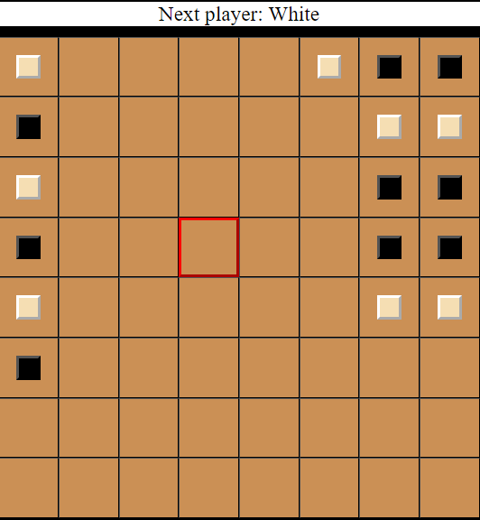
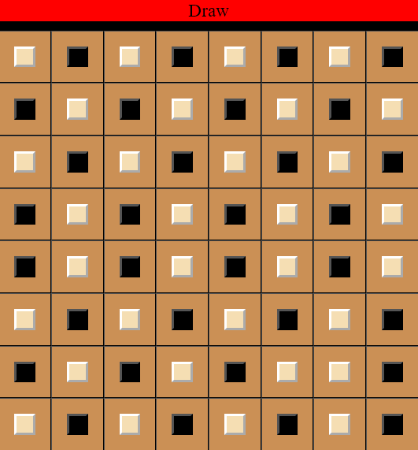
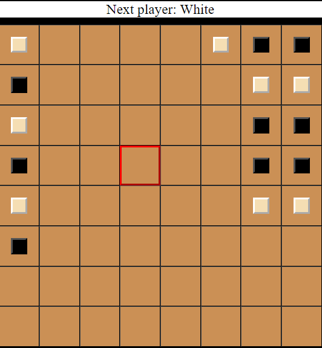
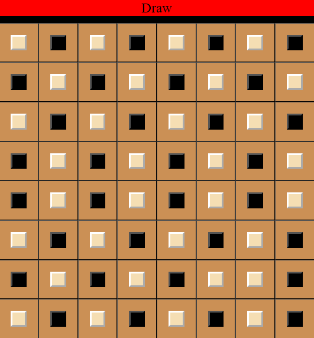

Magnetic Cave is a 2-player adversary game where each player tries to build a “bridge” of 5 magnetic bricks within a
cave whose left and right walls are magnetic. For the sake of this project, the bricks of one player will be represented
by a ■ and the bricks of the other by a □.
The version of Magnetic Cave that you will implement will be played on a
regular 8x8 chess board.
The rules of the game are simple:
- Initially, the cave (the board) is empty.
- Player ■ and player □ move in an alternate fashion, starting with ■. So ■ starts, followed by □, then ■ again,
then □ again, ...
- Because there are two big magnets on each side of the cave, a player can only place a brick on an empty cell
of the cave provided that the brick is stacked directly on the left or right wall, or is stacked to the left or the
right of another brick (of any color).
- As soon as one player is able to align 5 consecutive bricks in a row, in a column or in a diagonal, then this
- If no player is able to achieve a winning configuration and the board is full, then the game stops and there is a tie.
The following figures show possible configurations of the game.
 


